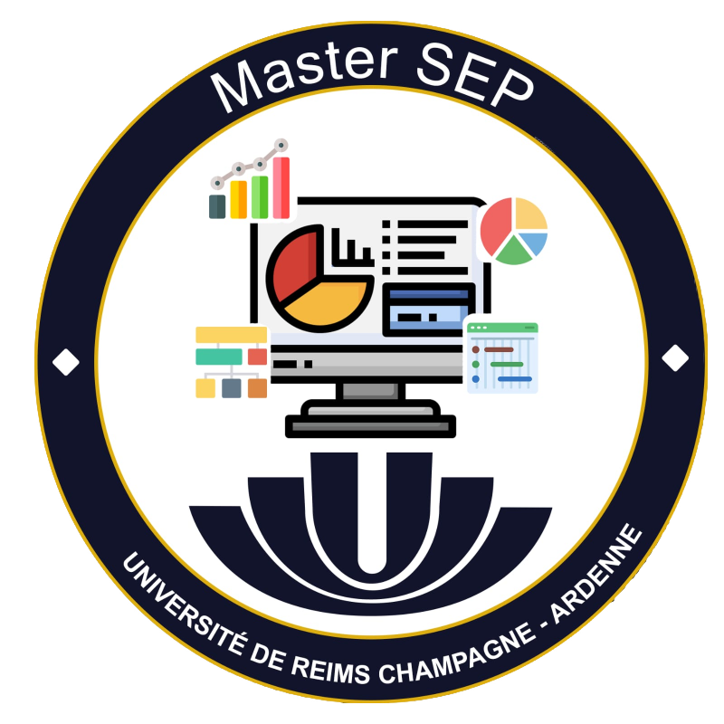

Présentation du Master SEP


Master Statistique pour l’Évaluations et Prévision (SEP) offre aux étudiants l’opportunité d’acquérir une formation sur deux ans dans les domaines de l’analyse économique quantitative et de l’aide à la décision. La dualité de cette formation, à la fois théorique et appliquée, permet d’acquérir des compétences reconnues tant dans le monde professionnel que dans le cadre de la préparation d’un doctorat.
Le parcours type « Statistique pour l’Évaluation et Prévision » (SEP) forme des statisticiens économistes aptes au dialogue avec des non spécialistes, performants dans tout domaine statistique, sur tout support informatique, et particulièrement efficients sur les problématiques de l’évaluation économique et sociale, de la Data Science, du traitement de données massives (Big Data), du traitement de données marketing et de la gestion des risques.
A l’issue de la formation SEP, les étudiants auront acquis et approfondi les compétences dans les domaines
– quantitatifs : analyse des données, séries temporelles, apprentissage statistique, aspects de classification et de mise en place de scores, économétrie, géostatistique, data mining, modélisation mathématique, techniques quantitatives en évaluation, fondements des mathématiques financières, mesure des risques.
– informatiques : maîtrise des logiciels dédiés à la statistique et à la modélisation tels que IBM-SPSS, SAS ou encore R et Python, qui sont assimilés en contexte grâce à leur utilisation systématique lors des enseignements de statistique et en mode projet. Les aspects de codage ne sont pas en reste : les macro sous Excel, la programmation en VB-VBA ainsi qu’en langage objet R et Python ou encore la syntaxe de SAS et d’IBM-SPSS, font l’objet d’un enseignement spécifique. Enfin les requêtes ACCESS et SQL Server sont elles aussi maîtrisées. Les logiciels Hadoop et Spark dédiés au Big Data sont également présentés ;
– métiers : Data Science, évaluation, prospective, mesure et gestion des risques en particulier financiers, marketing, télécommunications, projets Big Data, économie du développement durable, bio-économie.
La formation est pluridisciplinaire : les enseignements sont dispensés par des économistes, des mathématiciens et des informaticiens, ainsi que des professionnels des secteurs d’applications.
Les compétences acquises dans ce Master dépassent largement le cadre de la statistique appliquée et de l’économétrie, pour couvrir les champs de l’économie et de l’informatique.
Un premier tiers des enseignements est dispensé par des probabilistes-statisticiens et informaticiens, un second par des économistes, le reste étant réalisé par des professionnels des méthodes quantitatives rompus aux demandes et restitutions « tout public ».

Nos futurs statisticiens sont confrontés, dès leur formation, à la multidisciplinarité et à la nécessité d’user d’un langage commun grâce au recrutement d’étudiants issus de cursus variés : scientifique (mathématiciens, probabilistes, ingénieurs pluridisciplinaires et informaticiens) et domaine tertiaire (économistes avec fort acquis mathématique, économètres, gestionnaires, géographes ou sociologues ayant de fortes appétences quantitatives).
La première année du master, les enseignements sont pour les 6/10ème en rapport avec leur cursus d’origine pour aboutir à une offre commune en 2nde année.
En première année et dans une moindre mesure, en seconde année, il y a une mutualisation d’un certain nombre d’enseignements avec les parcours : « Transition écologique, politiques publiques» et « Entrepreneuriat, Innovation et Bio-économie » de la mention Économie Appliquée, «Calcul Scientifique» de la mention Mathématiques et Applications, « Calcul Haute Performance, Simulation ».
La formation s’achève avec un stage long soutenu devant l’ensemble du corps enseignant et de la nouvelle promotion. La pédagogie mise en œuvre est fondée sur la réalisation de projets utilisant les acquis de plusieurs enseignements, et réalisés systématiquement en groupe.
La formation se déroule sur le campus Sciences et sur le campus Économie de l’Université de Reims.
Le Master délivre le SAS Joint Certificate Program « SAS Programing & Data Analysis ».
Le master SEP de l’université de Reims Champagne-Ardenne a été classé parmi les meilleurs masters au classement 2023 “Master Big Data & Data Sciences” de Eduniversal.